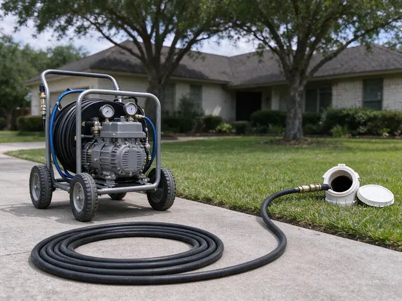
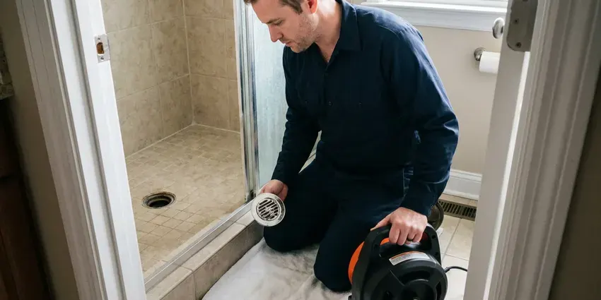

Hydro Jetting in Bellingham, WA
Dealing with recurring drain clogs in Bellingham, WA? Hydro jetting provides a powerful, long-lasting solution for your pipes.
- Quick Clog Removal
- Camera Inspection Before Jetting
- Eco-Friendly Method
- High-Pressure Cleaning

Need Serious Drain Cleaning? Get Hydro Jetting Service in Bellingham, WA.
Do not let recurring drain issues disrupt your home, contact us for a lasting solution.
Dependable Hydro Jetting Services in Bellingham, WA
When conventional snaking is not enough, hydro jetting uses high-pressure water to scour the inside of your pipes, restoring them to near-original condition. FHN Plumbing provides this thorough drain cleaning solution for homes and businesses throughout Bellingham, WA.
Our expertise includes:
- Clear grease, scale, and root intrusions.
- High-pressure water jetting for all pipe sizes
- Root removal and heavy grease buildup clearing

Additional Drain Services Services in Bellingham, WA
From stubborn kitchen clogs to main sewer backups, our drain services in Bellingham, WA restore full flow fast and keep it that way.


Bellingham drain cleaning specialists


Customers
Why Choose FHN Plumbing for Hydro Jetting in Bellingham, WA?
Hydro jetting is a superior method for truly cleaning your pipes, not just poking a hole through a blockage. It is especially helpful for older homes in Bellingham and for dealing with mineral buildup.
- Prevents Recurrence, By thoroughly cleaning the pipe walls, hydro jetting greatly reduces the chances of blockages forming again quickly.
- Full-Wall Cleaning, Jetting scrubs the pipe circumference instead of leaving a narrow channel through the clog.
- Preventative Care, Regular hydro jetting can prevent future clogs and lengthen the life of your plumbing system.
Citywide Coverage
No matter where you are in Bellingham, our skilled plumbers are ready to bring hydro jetting equipment to resolve your most stubborn drain issues. We are dedicated to keeping drains flowing smoothly throughout the entire Bellingham, WA area.
Experienced Team
Each member of our team is certified and stays current on hydro jetting techniques and safety protocols. You can trust their expertise to diagnose your drain issue correctly and apply the best solution.
Safety-First Approach
Our equipment is regularly inspected and maintained for safe and efficient performance. We take every precaution, including a pipe camera inspection before jetting, to prevent any damage to your plumbing system.
Trusted Certified Bellingham Plumbing Services Professionals
At FHN Plumbing, we take pride in providing certified plumbing services throughout Bellingham, WA. Backed by recognized industry credentials, our experienced plumbers combine technical skill with genuine customer care. Whether it is repair, installation, or maintenance, we follow strict safety and quality standards to deliver long-lasting results you can trust.
Call Us Now PHCC Plumbing Contractor Recognition
PHCC Plumbing Contractor Recognition Better Business Bureau (BBB) Accreditation
Better Business Bureau (BBB) Accreditation Angi Certified Pro
Angi Certified Pro ISO 9001 Quality Management Certification
ISO 9001 Quality Management CertificationThorough Hydro Jetting Services in Bellingham, WA
Scale Removal in Cast Iron Pipes in Bellingham
Cast iron drains in older homes build up rust tubercles and mineral scale, and hard water speeds that process. Jetting with the right nozzle can strip much of this buildup and restore flow. We keep pressure in a safe range for aged iron and watch the camera for thin spots. This cleaning is also the standard prep step before pipe lining. Clean pipe walls help a liner bond correctly.

Residential Hydro Jetting in Bellingham
For homeowners in Bellingham facing recurring clogs, slow drains, or foul odors, residential hydro jetting is a powerful solution. Our service targets common household causes like grease buildup from kitchens, hair and soap scum from bathrooms, and even laundry detergent residue. We use specialized nozzles and adjustable pressure to safely clear blockages in pipes ranging from small kitchen lines to main sewer connections, restoring optimal drainage and preventing future issues.
Preventative Maintenance Hydro Jetting in Bellingham, WA
Proactive hydro jetting can save Bellingham, WA property owners from unexpected plumbing emergencies. For homes and businesses with a history of drain issues or those prone to specific types of buildup, scheduled hydro jetting is an smart preventative measure. By regularly removing scale, grease, and other debris before they cause a full blockage, you can extend the life of your pipes, avoid costly repairs, and maintain consistent drainage. We can set up a custom maintenance schedule for your needs.
Main Sewer Line Hydro Jetting in Bellingham
The main sewer line is the backbone of your plumbing system, and clogs here can affect all your drains. In Bellingham, main sewer lines are often susceptible to tree root intrusion, especially from large mature trees planted near the line. Hydro jetting is highly effective at cutting through and flushing out these roots, as well as clearing significant blockages caused by built-up waste. We use powerful jetting equipment to fully clean the entire length of your main sewer line, for free flow to the municipal sewer system.
Kitchen Line Grease Jetting in Bellingham, WA
Kitchen drains are the most common grease trouble spot in any home or restaurant. Grease clings to pipe walls and hardens, especially where the line runs flat under a slab. Jetting melts and scrubs this buildup away instead of just poking a hole through it. We use smaller hose and nozzles sized for 1-1/2 and 2 inch kitchen lines. This keeps your sink and dishwasher draining properly for much longer.
Sewer Line Descaling with Hydro Jetting in Bellingham
Over time, mineral deposits and other materials can build up on the interior walls of sewer lines, forming a tough scale. This reduces pipe diameter and can lead to frequent clogs. Many rural Washington homes rely on private wells, and some carry iron, manganese or other minerals that call for testing and treatment. Hydro jetting is the most effective method for sewer line descaling, using powerful water jets to break down and flush away these mineral deposits, restoring the pipe's full carrying capacity and slowing future buildup.
Commercial Hydro Jetting in Bellingham, WA
Businesses in Bellingham, WA often deal with high volumes of waste and specific types of buildup, such as food grease in restaurants or industrial debris. Our commercial hydro jetting is designed for the larger, more complex plumbing systems found in commercial properties. We thoroughly clear heavily impacted lines, preventing costly downtime and keeping your business running smoothly. This service is key for maintaining health code compliance and avoiding severe backups in high-usage settings.

Residential Sewer Line Jetting in Bellingham
Main sewer lines in homes are usually 3 or 4 inches and can collect years of grease, soap, mineral scale and roots. We feed jetting hose through a cleanout and work it toward the street, cleaning in passes. Rear-facing jets pull the nozzle forward while forward jets break up heavy blockages. The water carries debris down to the city main. A camera run afterward shows the pipe walls clean and clear.
Hydro Jetting Near Me in Bellingham, WA
We pride ourselves on being trusted local experts for drain cleaning solutions. When you choose FHN Plumbing for hydro jetting in Bellingham, you are choosing a company committed to lasting results and great customer service right in your neighborhood.
Being local means we know which neighborhoods have older cast iron or clay pipe and which have newer PVC. That helps us choose safe pressure settings and the right nozzle. It also means faster arrival times when you need help.
FHN Plumbing at a Glance
- Fully licensed plumbing team covering Bellingham, WA
- Same-day appointments and 24/7 emergency response
- Upfront, flat-rate pricing before work begins
- 4.9-star rated by 382+ Washington customers
Bellingham Map
Bellingham Information
- Population
- 94,720
- Area codes
- 360/564/253
- Service area
- Bellingham and communities within 40 miles
- Nearby
- Mount Vernon, Marysville, Everett, Bothell
Hydro jetting is particularly important for homes in Bellingham, WA due to tree root intrusion into sewer lines and the buildup of mineral deposits and grease common in older plumbing systems.
Expert Services
Trust our professionals for reliable FHN Plumbing solutions in Bellingham, WA.
Our Specialized Plumbing Services in Bellingham, WA
At FHN Plumbing, we provide a complete range of plumbing services across Bellingham, WA. From leak detection to full system installations, our team ensures fast, precise, and affordable service for both residential and commercial properties. Explore our core services below:


How Our Hydro Jetting Service Works in Bellingham, WA
Our hydro jetting process is thorough and designed for maximum effectiveness while protecting your plumbing system.
Request a Quote
Call (425) 491-3131 to schedule an appointment for your hydro jetting service. Our customer service team will gather initial information about your drain issues and set up a convenient time for a plumber to visit.
Initial Inspection
Before any jetting begins, our technician will perform a camera inspection of your pipes. This lets us accurately diagnose the blockage type and assess the pipe's condition, confirming hydro jetting is the right solution for your Bellingham property.
Hydro Jetting
Using professional equipment, we insert a high-pressure hose with a specialized nozzle into your drain line. Water jets scour the pipe walls, breaking apart and flushing out grease, roots, scale, and other debris, restoring full flow.
Frequently Asked Questions About Hydro Jetting in Bellingham
The cost of hydro jetting in Bellingham, WA can range from $300 to $800, depending on the severity of the clog, the length and diameter of the pipe, and whether camera inspection is required. More complex jobs, like removing extensive tree roots or cleaning long commercial lines, may be on the higher end. We provide a written estimate after assessing your situation.
Hydro jetting is exceptionally effective against almost all types of clogs. It can break through solid obstructions like tree roots, flush out heavy grease and food buildup, clear mineral scale, and remove compacted sludge and debris that traditional snaking often misses.
Drain snaking uses a cable with an auger that punches a hole through a blockage to restore some flow. Hydro jetting, however, uses high-pressure water to completely scour the inside of the pipe, removing all buildup and restoring the pipe to a near-new condition. Hydro jetting offers a more complete and longer-lasting clean.
No permit is needed for jetting. If the inspection shows damage that needs repair, permits may be required and we handle them.
Yes, we guarantee our jetting work in writing. The term depends on pipe condition found during the camera check.
FHN Plumbing uses professional-grade hydro jetting equipment from established manufacturers like Spartan Tool and MyTana. These brands are known for their reliability, powerful performance, and safety features, so we can deliver the most thorough cleaning for your pipes.
It is safe for most pipes in fair condition when pressure is set correctly. We camera the line first and avoid jetting pipe that is broken or caved in.
While hydro jetting is very powerful, it is generally safe for most sound plumbing systems, including PVC, cast iron, and concrete pipes. However, it is not recommended for severely damaged, corroded, or fragile pipes, which is why a pre-jetting camera inspection by FHN Plumbing is crucial to assess pipe integrity and prevent further damage.
What People Are Saying About Our Plumbing Experts?

Daniel K.
A pipe burst at 11 pm and they actually answered. The plumber showed up within the hour, shut everything down, and had us back to normal the next morning. Could not ask for more.
Emergency Plumbing · Kirkland, WA
James P.
Our commercial plumbing system had a leak under the sink, and FHN Plumbing handled it professionally. The plumbers arrived quickly and restored everything without disruption to our customers.
Commercial Plumbing · Bothell, WA
Mark T.
When our office needed drain cleaning, FHN Plumbing provided quick, reliable service. The plumber arrived on time and made sure every drain flowed perfectly before leaving. Very satisfied.
Drain Cleaning · Marysville, WA
Emily R.
I called FHN Plumbing for plumbing repair, and the technician was fast, polite, and thorough. They explained the problem clearly and fixed it the same day. I will definitely hire them again. Highly recommended!
Plumbing Repair · Everett, WA
Laura S.
I scheduled a water heater replacement, and the team made the process smooth and affordable. The new unit works perfectly, and they cleaned up after completing the job.
Water Heater Replacement · Everett, WARobert G.
The trenchless sewer replacement saved our front yard. They walked us through the camera inspection footage first so we knew exactly what we were paying for.
Sewer Line Replacement · Everett, WA